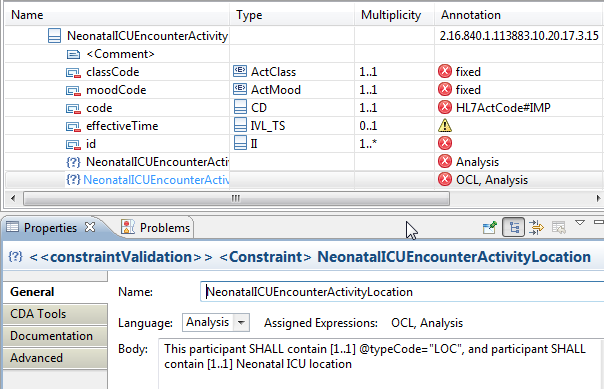
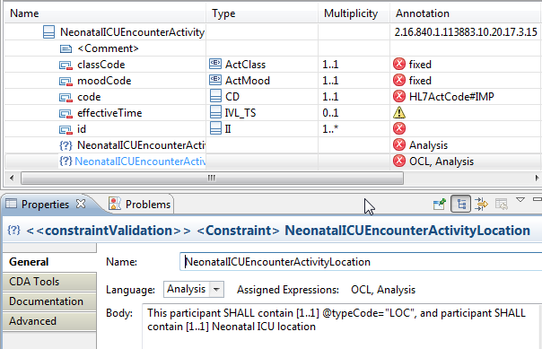

Add informal constraint definition in human readable text.
-
To add a new constraint, right-click on the table row and select

This is an example of
a completed constraint within the Neonatal ICU Encounter Activity class.

